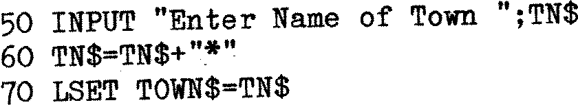
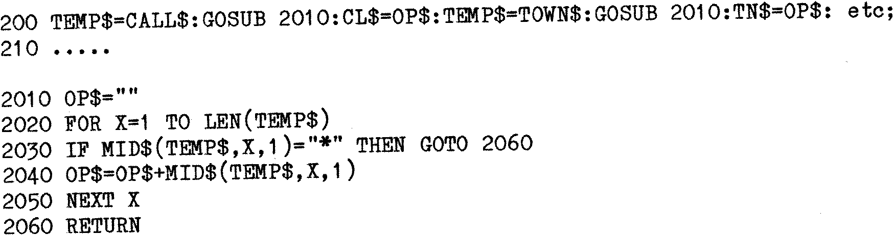
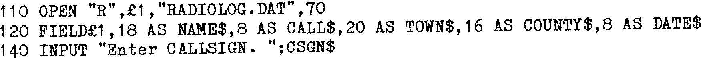

80-Bus News |
September–October 1983 · Volume 2 · Issue 5 |
| Page 18 of 67 |
|---|
In the example above, we could have written:
The problem of the blanks would still remain though. One way of dealing with the blanks is simply to read the Field from left to right and discard blanks. This is O.K. until we realize that some Fields contain needed blanks (e.g. SOUTH ROAD). A better way to deal with the problem is to deliberately mark the end of the required data with a special Character:
Assuming use of a 20 byte field, and that the word ‘LONDON’ is INPUT, this would store the Field TOWN$ as ‘LONDON* ‘. To extract the Town from the Disk Record, less blanks and Field terminator, the following type of routine can be used :
The reason for using the “dummy” variables TEMP$ and OP$ is that all Fields that need processing in this way can then use the same Subroutine.
| Line 2010 | – | Ensures that the dummy variable is empty at the start. |
| Line 2020 | – | Sets up a loop equal to the length of the Field. |
| Line 2030 | – | Reads the copy of the field stored in TEMP$ from left to right, one character at a time. If the character found is a “*”, the program skips to 2060 to return to the main flow. |
| Line 2040 | – | The character is added on to OP$. |
| Line 2050 | – | The loop continues until a “*” is found or the whole length of the Field has been processed. |
There is thus no need to expand the Fields already declared to accomodate the “*” character. If for example a “*” were added to the date: “20/06/83*", then since only 8 bytes have been allowed for the date Field, when LSET the “*” would “drop off the end”. N.B. A ‘RSET’ would have stored “0/06/83*” in the Record Date Field.
When Data is stored in a Field, it is padded out with Blanks. The command that achieves this is LSET or RSET.
| Page 18 of 67 |
|---|